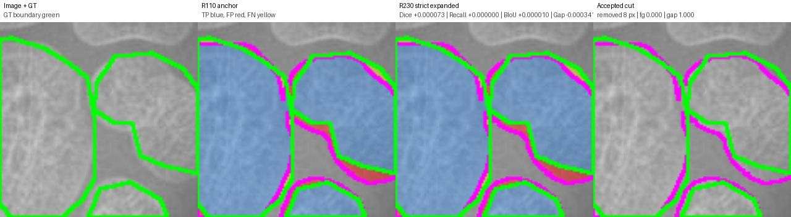
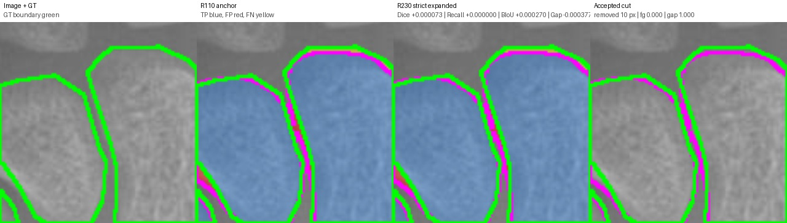

Legend: GT boundary green, prediction boundary magenta, TP blue tint, FP red, FN yellow. Accepted cuts: orange if true gap/background, red if GT foreground.
cut=8.0 px, Dice +0.000073, Recall +0.000000, BIoU +0.000010, gapFP -0.000341

{
"anchor_boundary_f1": "0.27669350802966197",
"anchor_boundary_iou": "0.1605596620908131",
"anchor_component_count_mae": "4.0",
"anchor_component_delta_mean": "-4.0",
"anchor_dice": "0.8648620047409414",
"anchor_gap_region_fp_rate": "0.2727621156630611",
"anchor_iou": "0.7619003225626014",
"anchor_precision": "0.8488719930200673",
"anchor_recall": "0.8814659821390052",
"cut_pixels": "8.0",
"delta_boundary_f1": "1.5456358385512736e-05",
"delta_boundary_iou": "1.0409168094277499e-05",
"delta_component_count_mae": "0.0",
"delta_component_delta_mean": "0.0",
"delta_dice": "7.322512951835058e-05",
"delta_gap_region_fp_rate": "-0.0003406864832637968",
"delta_iou": "0.00011366345138463796",
"delta_precision": "0.00014109652907046133",
"delta_recall": "0.0",
"edited": "1.0",
"image": "13867.png",
"num_accepted_cuts": "1.0",
"r229_boundary_f1": "0.2767089643880475",
"r229_boundary_iou": "0.16057007125890738",
"r229_component_count_mae": "4.0",
"r229_component_delta_mean": "-4.0",
"r229_dice": "0.8649352298704598",
"r229_gap_region_fp_rate": "0.2724214291797973",
"r229_iou": "0.7620139860139861",
"r229_precision": "0.8490130895491378",
"r229_recall": "0.8814659821390052"
}
cut=10.0 px, Dice +0.000073, Recall +0.000000, BIoU +0.000270, gapFP -0.000377

{
"anchor_boundary_f1": "0.44864",
"anchor_boundary_iou": "0.2891914191419142",
"anchor_component_count_mae": "2.0",
"anchor_component_delta_mean": "-2.0",
"anchor_dice": "0.937545553578846",
"anchor_gap_region_fp_rate": "0.19222218035196142",
"anchor_iou": "0.8824336485549474",
"anchor_precision": "0.9203286558345642",
"anchor_recall": "0.9554188962542928",
"cut_pixels": "10.0",
"delta_boundary_f1": "0.0003249108784270094",
"delta_boundary_iou": "0.00027005985834344104",
"delta_component_count_mae": "0.0",
"delta_component_delta_mean": "0.0",
"delta_dice": "7.348284336006206e-05",
"delta_gap_region_fp_rate": "-0.0003768323472886914",
"delta_iou": "0.0001302043068116543",
"delta_precision": "0.00014162824410368646",
"delta_recall": "0.0",
"edited": "1.0",
"image": "15067.png",
"num_accepted_cuts": "1.0",
"r229_boundary_f1": "0.448964910878427",
"r229_boundary_iou": "0.28946147900025765",
"r229_component_count_mae": "2.0",
"r229_component_delta_mean": "-2.0",
"r229_dice": "0.937619036422206",
"r229_gap_region_fp_rate": "0.19184534800467273",
"r229_iou": "0.8825638528617591",
"r229_precision": "0.9204702840786679",
"r229_recall": "0.9554188962542928"
}